The list below shows a list of plot symbols in the scatter graph, Line+Symbol graph, etc. In LabTalk, these symbols can be accessed or set by Get -k command or Set -k command, respectively.
| Shapes | Interiors | ||
|---|---|---|---|
| 0. | No Symbol | 0. | Solid |
| 1. | 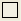Square | 1. | Open |
| 2. | 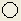Circle | 2. | Dot Center |
| 3. | Up Triangle | 3. | Hollow |
| 4. | Down Triangle | 4. | 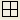+ Center |
| 5. | Diamond | 5. | 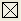x Center |
| 6. | 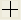Plus Sign | 6. | - Center |
| 7. | Cross | 7. | 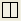|Center |
| 8. | 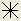Star(*) | 8. | Half Up |
| 9. | 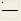H Bar(-) | 9. | 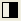Half Right |
| 10. | V Bar(|) | 10. | Half Down |
| 11. | Numbers(1, 2, 3,...) | 11. | 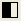Half Left |
| 12. | ALPHABETS(A, B, C,...) | ||
| 13. | alphabets(a, b, c,...) | ||
| 14. | Right Arrow() | ||
| 15. | Left Triangle | ||
| 16. | Right Triangle | ||
| 17. | Hexagon | ||
| 18. | Star | ||
| 19. | Pentagon | ||
| 20. | 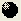Sphere | ||
| 56. | data markers(special) | ||
| 58. | Vertical lines that mark the X position of the data point(special) |